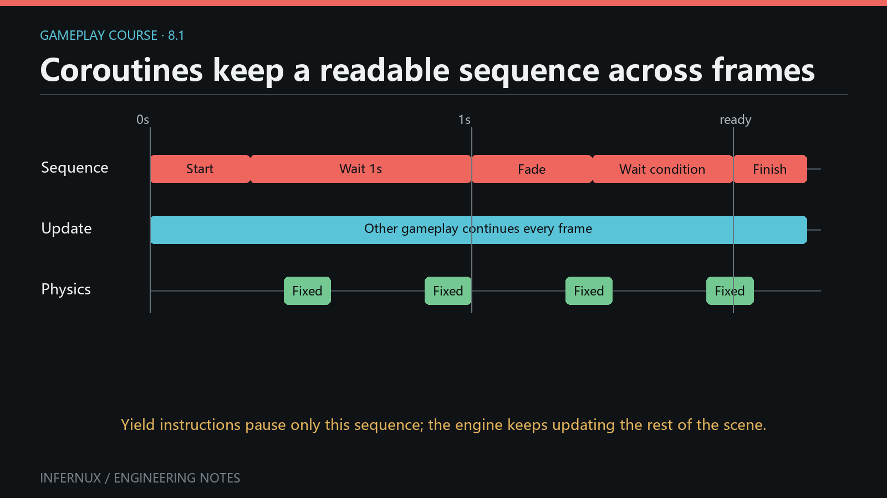

Gameplay · Chapter 8
Coroutines and multi-frame sequences
Some gameplay reactions have a clear order but span several frames: wait, hand work to physics, watch a condition, then finish an effect. Infernux coroutines let an InxComponent write that order as a Python generator. A yielded instruction pauses only that generator while the rest of the scene continues to update.

The generator model
A coroutine method contains yield, so calling it creates a generator. Pass that generator object to start_coroutine():
def start(self):
self._handle = self.start_coroutine(self.flash())
def flash(self):
Debug.log("flash starts")
yield WaitForSeconds(0.5)
Debug.log("flash ends")
start_coroutine() runs the generator immediately until its first yield. In the example, flash starts is logged inside start(). The returned Coroutine handle represents the scheduled continuation. Its is_finished property becomes True after normal completion or cancellation.
The scheduler is cooperative and belongs to the component. A coroutine must yield for other phases to advance it; it should not contain a long blocking loop, time.sleep(), file wait, or busy polling.
Prepare the Editor
- Create an empty GameObject named
CoroutineLab. - Create
Assets/Scripts/coroutine_tour.pyand paste the complete component below. - Attach
CoroutineTourtoCoroutineLab. - Open Console, clear old messages, and enter Play mode.
The example needs no Collider or Rigidbody. WaitForFixedUpdate() waits for the engine's next fixed-update phase even when this component does not override fixed_update().
Run every wait type
from Infernux.components import InxComponent
from Infernux.coroutine import (
WaitForEndOfFrame,
WaitForFixedUpdate,
WaitForFrames,
WaitForSeconds,
WaitForSecondsRealtime,
WaitUntil,
WaitWhile,
)
from Infernux.debug import Debug
class CoroutineTour(InxComponent):
def awake(self):
self._sequence_handle = None
self._gate_open = False
self._busy = False
def start(self):
self._sequence_handle = self.start_coroutine(self.run_sequence())
def run_sequence(self):
Debug.log("1. sequence started immediately", self)
yield None
Debug.log("2. one update frame passed", self)
yield WaitForFrames(2)
Debug.log("3. two more update frames passed", self)
yield WaitForSeconds(0.5)
Debug.log("4. 0.5 scaled seconds passed", self)
yield WaitForSecondsRealtime(0.25)
Debug.log("5. 0.25 real seconds passed", self)
yield WaitForFixedUpdate()
Debug.log("6. resumed in fixed update", self)
yield WaitForEndOfFrame(2)
Debug.log("7. two late-update phases passed", self)
self._gate_open = False
self.start_coroutine(self.open_gate_later())
yield WaitUntil(lambda: self._gate_open)
Debug.log("8. WaitUntil observed an open gate", self)
self._busy = True
self.start_coroutine(self.clear_busy_later())
yield WaitWhile(lambda: self._busy)
Debug.log("9. WaitWhile observed idle state", self)
child = self.start_coroutine(self.child_sequence())
yield child
Debug.log("10. child finished; parent finished", self)
def open_gate_later(self):
yield WaitForSeconds(0.2)
self._gate_open = True
def clear_busy_later(self):
yield WaitForFrames(2)
self._busy = False
def child_sequence(self):
Debug.log("child started immediately", self)
yield WaitForSeconds(0.2)
Debug.log("child completed", self)
def cancel_sequence(self):
"""May be bound to a UI Button."""
handle = self._sequence_handle
if handle is not None and not handle.is_finished:
self.stop_coroutine(handle)
def cancel_everything(self):
"""Stops the parent and every helper owned by this component."""
self.stop_all_coroutines()
The helper generators make the predicates change without input. In a game, those flags can be set by animation callbacks, collision events, UI actions, loading completion, or another component.
Complete waiting semantics
Each yielded value selects the phase that will check the coroutine next.
| Yielded value | Resume rule | Check phase |
|---|---|---|
yield None or bare yield |
Wait one update frame. | update |
WaitForFrames(n) |
Resume after exactly n update-phase checks. n must be an integer of at least 1; bool is rejected. |
update |
WaitForSeconds(seconds) |
Accumulate the update-phase frame delta until it reaches seconds. |
update |
WaitForSecondsRealtime(seconds) |
Resume on the first update check at or after its wall-clock target. | update |
WaitForFixedUpdate() |
Resume on the next fixed-update scheduler pass. | fixed_update |
WaitForEndOfFrame(n) |
Resume after n late-update scheduler passes. n has the same integer validation as WaitForFrames. |
late_update |
WaitUntil(predicate) |
Call predicate() on update checks and resume when its result is truthy. |
update |
WaitWhile(predicate) |
Call predicate() on update checks and resume when its result becomes falsy. |
update |
a Coroutine handle |
Resume after that handle is finished, including when it was stopped. | update |
| any unsupported value | Current runtime treats it like a one-update-frame wait. | update |
WaitForSeconds accumulates the frame delta handed to the coroutine scheduler. The scheduler currently forwards the same raw, unscaled delta that update() receives, so Time.time_scale does not slow this wait today; the instruction's docstring still describes scaled time, which the current call path does not deliver. WaitForSecondsRealtime uses wall-clock time, though it can only resume when an update check occurs. Construct realtime waits immediately before yielding them because their target time is set in the constructor.
WaitForEndOfFrame means the coroutine scheduler's late-update phase. It does not promise that rendering, presentation, or a screenshot has completed.
Zero or negative values are accepted by the two seconds-based instructions and become ready at the next update check. Frame-based instructions reject values below 1. For clear intent, use yield None when you want one frame.
Wait instructions carry mutable elapsed, target, or remaining state. Create a fresh WaitForSeconds, WaitForSecondsRealtime, WaitForFrames, or WaitForEndOfFrame for each wait instead of caching one instance across coroutines.
Handles, children, and cancellation
The component API has three operations:
| API | Effect |
|---|---|
start_coroutine(generator) |
Starts immediately, returns a Coroutine handle. |
stop_coroutine(handle) |
Stops that handle and closes its generator. |
stop_all_coroutines() |
Stops and closes every coroutine owned by this component. |
To wait for a child, start it and yield the returned handle:
child = self.start_coroutine(self.child_sequence())
yield child
Yielding self.child_sequence() directly produces an unsupported generator value. The current fallback waits one update frame and never schedules that generator. Always use start_coroutine() when the child needs independent scheduling and a handle.
Stopping a generator marks its handle finished and calls close(). Put essential generator-local cleanup in finally:
def temporary_state(self):
self._busy = True
try:
yield WaitForSeconds(5.0)
finally:
self._busy = False
The public handle also exposes creation_epoch, creation_epoch_id, and is_legacy for runtime-reload diagnostics. Gameplay flow normally needs only is_finished.
Stopping only the parent does not automatically stop helper coroutines that were started separately. Use stop_all_coroutines() when the whole component-owned sequence should end together, or retain and stop each helper handle explicitly.
Component lifetime rules
- Disabling an
InxComponentdoes not stop its Unity-style coroutines. Call a stop method inon_disable()when your design requires that behavior. - Deactivating the owning GameObject stops all of its component's coroutines and discards that component scheduler.
- A completed or stopped coroutine stays represented by its handle with
is_finished == True. - Starting a generator that completes before its first useful wait returns an already-finished handle.
- An exception raised while advancing coroutine body code ends that coroutine and is routed to the Editor Console with the component as context.
These rules make cancellation explicit at the component boundary and prevent a deactivated object from retaining scheduled gameplay work.
Verify the result
- Enter Play mode and watch Console. Message 1 should appear immediately during
start(); messages 2–10 should remain in numeric order. - Confirm that messages 2 and 3 are separated by update frames, then observe the scaled-time and real-time delays.
- Message 6 should follow a fixed-update pass. Message 7 should appear after two late-update passes.
- The gate and busy helpers should allow messages 8 and 9 to appear without input.
child started immediatelyshould appear before its delay, followed bychild completed, then parent message 10 on a later update check.- Bind a UI Button to
cancel_sequence()and press it before completion. The parent handle should finish with no later parent messages. Run again and bindcancel_everything()to stop parent and helpers together.
To inspect a handle during development, log self._sequence_handle.is_finished. Remove per-frame diagnostic logging after the check so Console remains useful.
Common errors
- Passing the method instead of its generator: call
self.start_coroutine(self.run_sequence()), including the final parentheses. - Using
time.sleep(): it blocks the thread and freezes other engine work. YieldWaitForSecondsRealtime()for a wall-clock delay. - Expecting an exact timestamp: waits resume on scheduler checks, so a duration is a minimum and can overshoot by part of a frame.
- Expecting
WaitForSecondsto respect pause: the current scheduler feeds the raw update delta, sotime_scaledoes not change this wait. Use realtime waiting for wall-clock delays, and accumulateTime.delta_timemanually when a sequence must follow the game clock. - Treating
WaitForEndOfFrameas post-render capture: it maps to late update in the current scheduler. - Reusing one wait instance: elapsed and remaining fields belong to that object. Construct a new instruction at each
yield. - Yielding a generator directly: start it first and yield its
Coroutinehandle. - Cancelling the parent and leaving helpers active: retain helper handles or stop all component-owned coroutines.
- Assuming component disable cancels work: add explicit
on_disable()cleanup when that is the intended lifetime. - Writing a loop with no
yield: the generator never returns control to the scheduler and can stall the frame.
Where to go next
You now have the complete gameplay foundation: components, authored fields, input, runtime object lifetime, physics callbacks, UI and scene flow, audio signals, and multi-frame sequences. Combine them by keeping immediate state transitions in events and moving readable, cancellable follow-up sequences into coroutines.